首页
显示用户一些待处理事项
用户登录该成功后进入主界面（如下图），在该页面中主要显示一些用户需要处理的事项。
待处理执行单
审核
点击执行单后面的【审核】按钮进入执行单的审核界面（如下图）
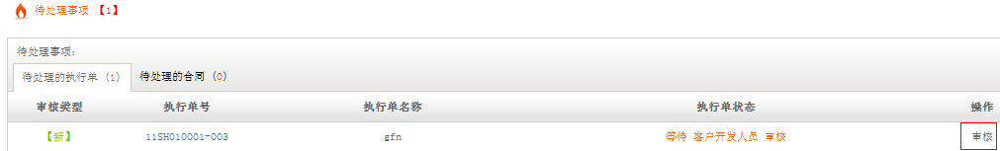
审核执行单内容
点击【审核执行单内容】按钮显示该执行单的内容，如内容没有问题点击【确认】完成执行单的审核。如需驳回先选择驳回至哪儿然后填写驳回原因点击【驳回】按钮弹出是否驳回消息框点击【确定】完成审核驳回（如下图）。
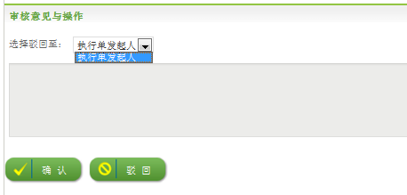
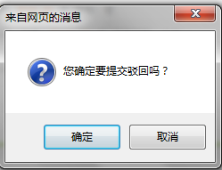
审核支持部门
点击【审核支持部门】进入支持部门的审核（如下图）如需驳回至部门勾选部门填写驳回理由点击【驳回】完成部门驳回。

支持部门审核填写
如果该部门是支持部门当部门的traffic登录进来会有一个审核填写信息需填写（如下图）。
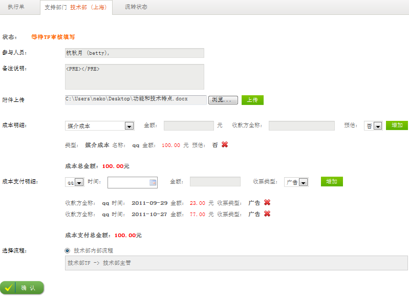
参与人员
输入（或关键词查询）该部门人员名称（如下图）
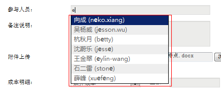
备注说明
填写备注信息（如下图）。
上传附件
点击【浏览】按钮选择需上传的文件点击【上传】按钮完成文件的上传，并把已经上传成功的文件名称显示在上传控件下方。如需上传多份文件可以重复选择上传，点击文件名称后面的删除按钮可以把上传上去的文件删除（如下图）。

成本明细
选择成本类型、金额、收款方全称、是否是预估点击【添加】完成成本明细的添加，并把添加成功的信息显示在该栏目下方。如有多个成本可以重复填写信息点击【添加】，在该栏目最下面有对所有成本金额的累计。点击成本信息后面的删除按钮删除已添加的成本信息（如下图）。
成本支付明细
选择收款方名称、时间、金额、收票类型点击【添加】按钮完成成本支付明细信息的添加。添加成功后在该栏目下方会显示出成本支付明细信息，如需分次支付可以重复添加（支付金额必须和上面成本明细里面的金额一致），点击成本支付明细信息后面的删除按钮删除该条支付信息（如下图）。
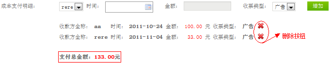
选择流程
选择使用的流程，选好流程后在该栏目下方会显示选择流程的详细信息（如下图）。
确认
点击【确认】弹出确认提交消息框，点击【确定】完成部门审核填写（如下图）。
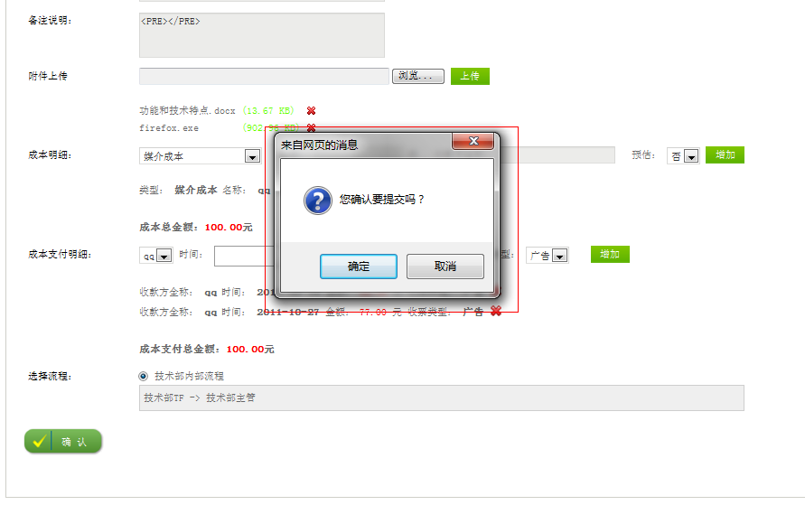
流程状态
点击【流程状态】查看该执行单的整个流程状态信息（如下图）。
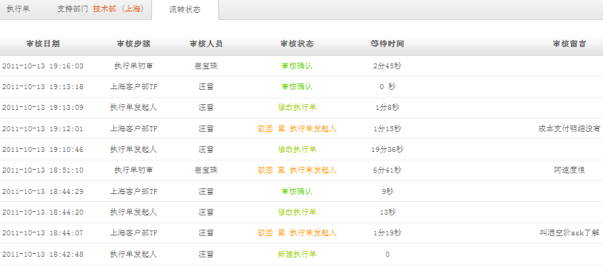
新建执行单
为某个合同创建一个执行过程。
进入OA系统后点击【执行单管理】下的【新建执行单】（如下图）。
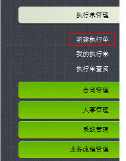
进入该系统后需要填写一系列执行单信息，具体信息如下：
所属合同
输入（或关键词查询号）已经确认过的合同号（如下图）。
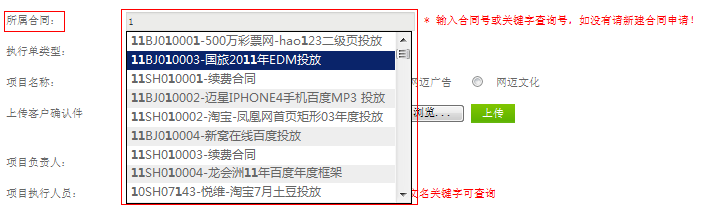
执行单类型
选择执行单类型，该类型的选择会影响后面项目执行期开始时间和结束时间的选择（如下图）。
项目名称
为该项目起一个名称，并选择抬头类型（如下图）。
上传客户确认件
点击【浏览】按钮选择需上传的文件点击【上传】按钮完成文件的上传，并把已经上传成功的文件名称显示在上传控件下方。如需上传多份文件可以重复选择上传，点击文件名称后面的删除按钮可以把上传上去的文件删除（如下图）。
项目负责人
在下拉框中选择项目负责人（如下图有）。
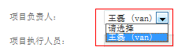
项目执行人员
输入姓名或英文名关键词查询选择名称（如下图）。
项目执行期
选择项目开始和结束时间的执行期（如下图）。
注：执行单类型选择的是普通：项目执行期的开始和结束时间只能是当前日期之后。
执行单类型选择的是预充值：开始日期在当前日期之后，结束日期只能是所选择的开始日期之后。
执行单类型选择的是结算：开始日期可以选择当前日期之前的日期，结束日期是当前所选开始日期之后的日期。
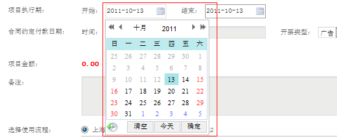
合同约定付款日期
选择时间、填写金额、选择开票类型、填写备注信息（选填）后点击【添加】按钮完成合同约定付款日期的添加并显示在控件下方。如需分次付款可以重复添加合同约定付款日期，在该栏目下方会把所有付款金额累计起来显示在下方。点击合同信息后面的删除按钮，删除合同(如下图)。
备注
填写对该执行单的一些备注信息，可以选择不填写（如下图）。
选择使用流程
选择使用的流程，选好流程后在该栏目下方会显示选择流程的详细信息（如下图）。
选填一
点击【选填一】显示需要支持部门的信息，勾选需要支持的部门（如下图）。
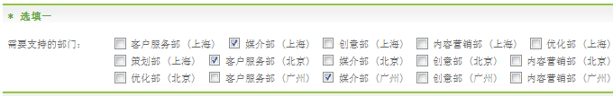
选填二
点击【选填二】显示成本明细和成本支付明细信息页面。
成本明细：选择成本类型、金额、收款方全称、是否是预估点击【添加】完成成本明细的添加，并把添加成功的信息显示在该栏目下方。如有多个成本可以重复填写信息点击【添加】，在该栏目最下面有对所有成本金额的累计。点击成本信息后面的删除按钮删除已添加的成本信息（如下图）。
成本支付明细：选择收款方名称、时间、金额、收票类型点击【添加】按钮完成成本支付明细信息的添加。添加成功后在该栏目下方会显示出成本支付明细信息，如需分次支付可以重复添加（支付金额必须和上面成本明细里面的金额一致），点击成本支付明细信息后面的删除按钮删除该条支付信息（如下图）。
提交
填写完所有的信息后点击【提交】按钮弹出消息框点击【确定】完成执行单的创建(如下图)。
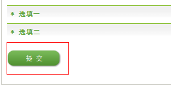
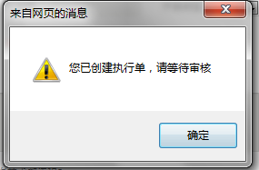
我的执行单
所有用户创建的执行单
点击我的执行单管理下的【我的执行单】进入执行单页面（如下图）。
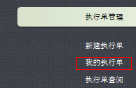
在用户执行单界面主要显示每条执行单的信息包括执行单号、客户名称、创建时间、项目名称、总金额、总成本、状态（执行状态）等一系列信息（如下图）。
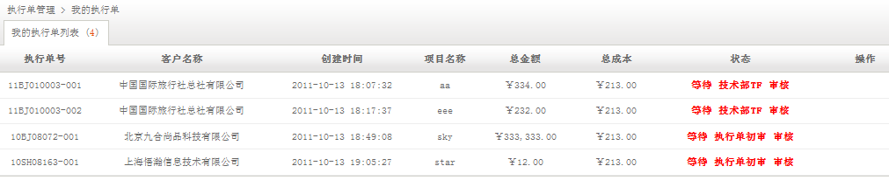
执行单查询
查看所有的执行单
点击执行单管理下面的【执行单查询】按钮进入执行单查阅界面（如下图）。
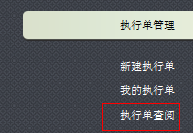
在执行单查询界面主要显示所有执行单的信息包括执行单号、客户名称、创建时间、项目名称、总金额、总成本、状态（执行状态）等一系列信息（如下图）。
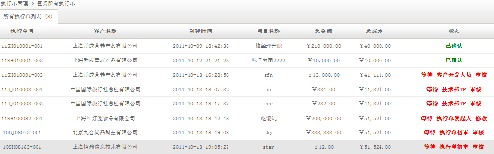